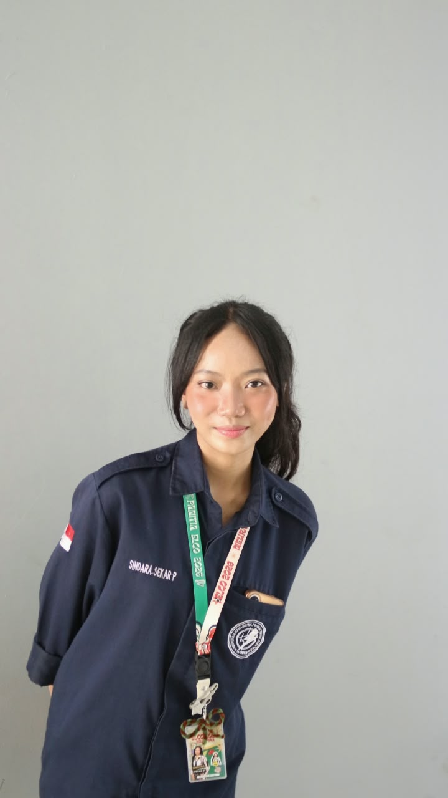
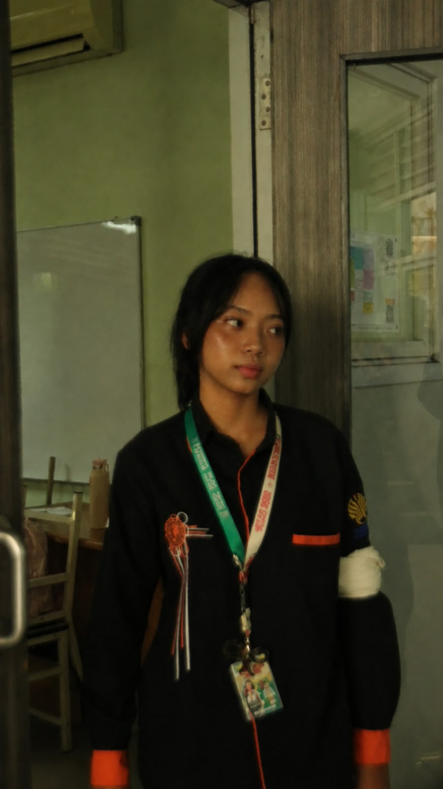
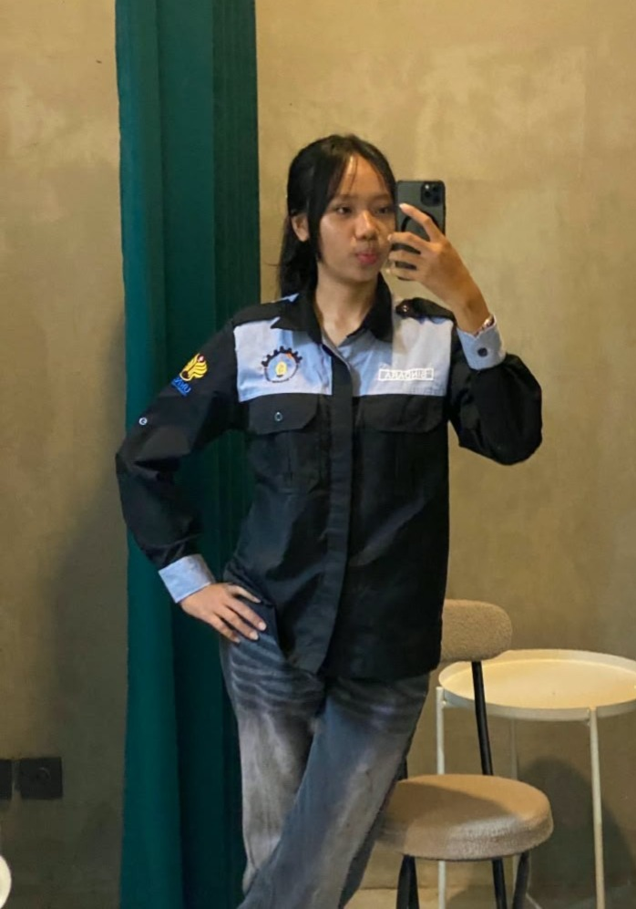
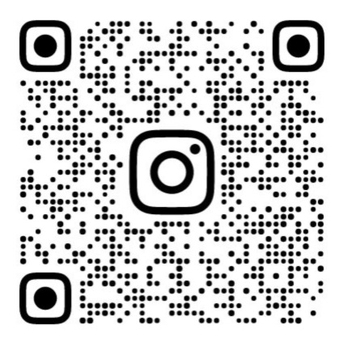
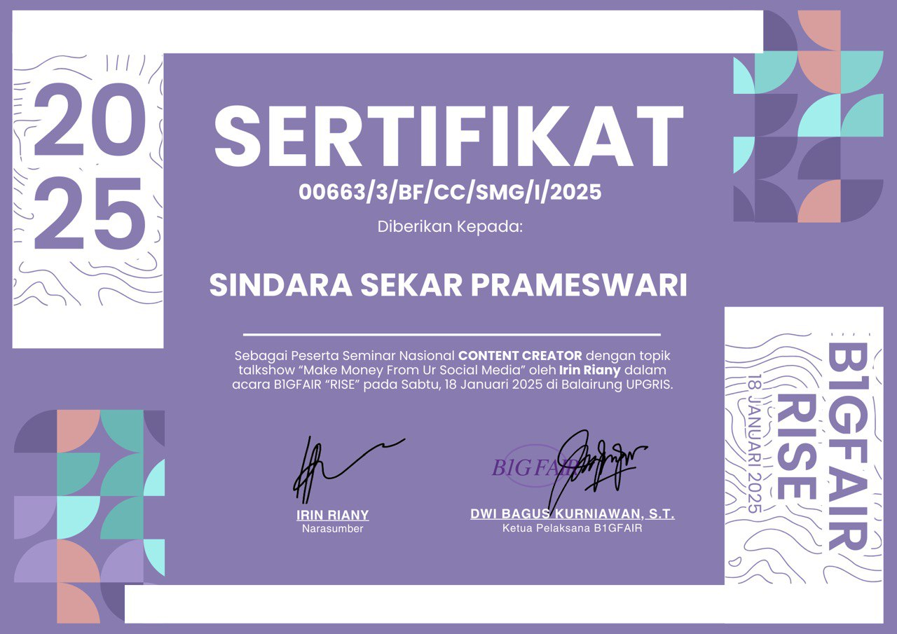
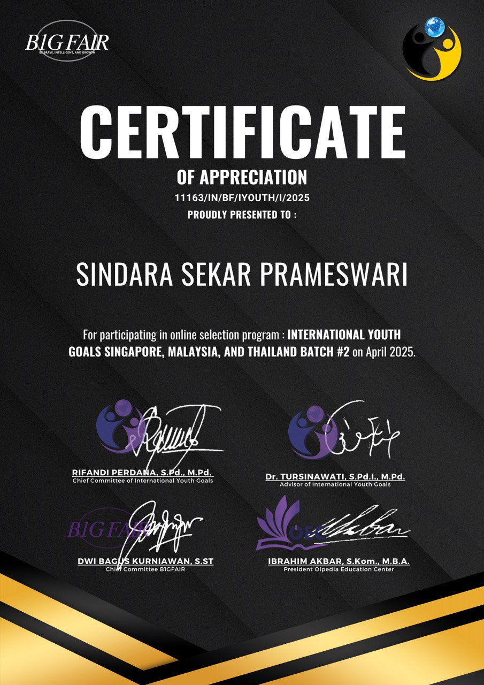
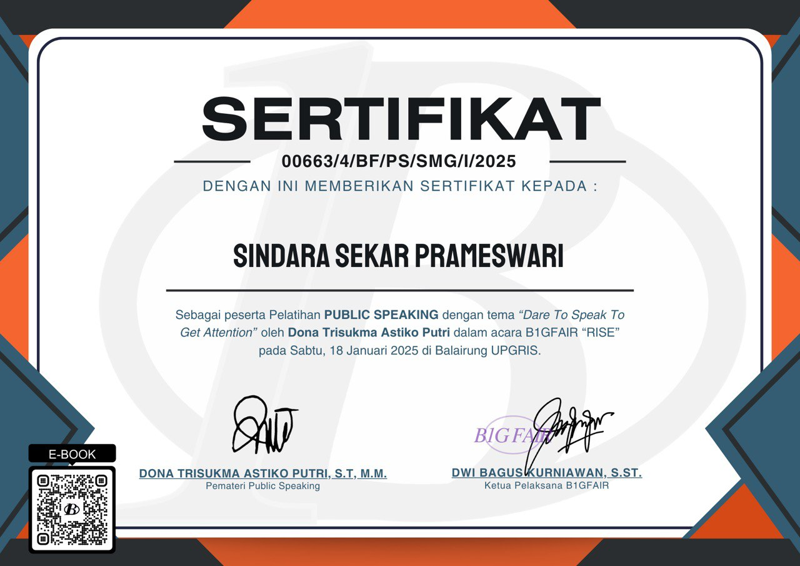

Nama: Sindara Sekar Prameswari
NIM: 2405110026
Program Studi: Teknik Komputer
Tahun Angkatan: 2024
Cita-cita: Menjadi Software & Hardware Engineer Inovatif
Aktif berorganisasi di HIMPROTE FT UNNES dan HMW FT UNNES. Selain itu, saya juga sibuk mengembangkan skill sebagai Content Creator, Public Speaker, dan bereksperimen dengan proyek mikrokontroler.


Scan WA

@sindaraaskr
Saya bercita-cita menjadi expert di irisan antara hardware dan kecerdasan buatan, spesifiknya pada:
Simulasi Matlab Level Pro, C++, Python, VS Code, Desain Grafis, dan Desain Web.


